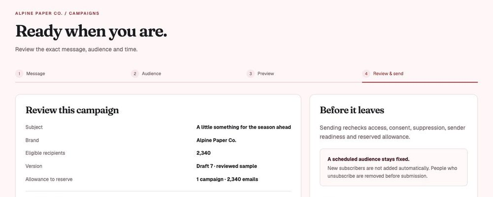

One unsubscribe click, one stale approval, and the test I'd tell a former guest about.
Suppose I approve a newsletter at breakfast. It's scheduled and ready. Five minutes before it goes out, a former guest clicks unsubscribe on last month's email.
Do they still get today's?
The lazy version of this software builds the recipient list at approval time and mails whoever was on it. That guest gets an email they declined five minutes ago, which is how you lose somebody's trust and, depending on where they live, tangle with email rules.
That guest should be able to count on the click. So Flockletter doesn't trust its own homework: right before each message is handed off for delivery, it checks again, and anyone who unsubscribed after approval is skipped. It checks a few other things on the same pass: that the account is still in good standing, that the sender is still verified, that there's still allowance left. But the unsubscribe is the one with a person on the other end.
We ran that exact sequence in staging. The build that shipped had more than nine hundred automated tests behind it. This is the one I'd tell a former guest about.

The same instinct runs one layer up. A new version of Flockletter doesn't get to production because I feel good about it. The release button walks a checklist, and any "no" stops it:
If you've ever worked a change window, you recognize every line. That list is in there because I've been on the wrong side of "it worked in the lab."
Nothing exotic. Development runs on the Mac Studio at home, the same machine the staff lives on. A separate staging site is where I try things like the unsubscribe race, with made-up people. Production is its own site with its own logins and its own data.
And even in production, I get one more look. Before a campaign goes anywhere, I can review the finished newsletter and send it to an audience of exactly one. Me. Every launch should have a dress rehearsal with a guest list that short.
The decision log from Part 1 is still going, too. It's past sixty entries. Nobody asked for that. I apparently can't build a newsletter tool without a change record.
When I wrote The Staff of Ten in July, I was a video operations guy teaching myself AI at the kitchen table. On this trip, the most familiar part of the work wasn't the code. It was asking what should happen when something changes five minutes before you go live. Years in operations will get you asking that question in your sleep. ChatGPT helped me turn the answer into software on the way to see family. The question was the hard part, and I brought that one from the day job.
So now I have a newsletter app, and the first issue is out. What I still owe those folks is a good reason to come back to Keystone. The software, it turns out, was the easy half.
Next series: the first two apps. One of them started with a single question, asked every morning. The other one is still waiting on its first order.
You can unsubscribe any time. I have tested that part personally.